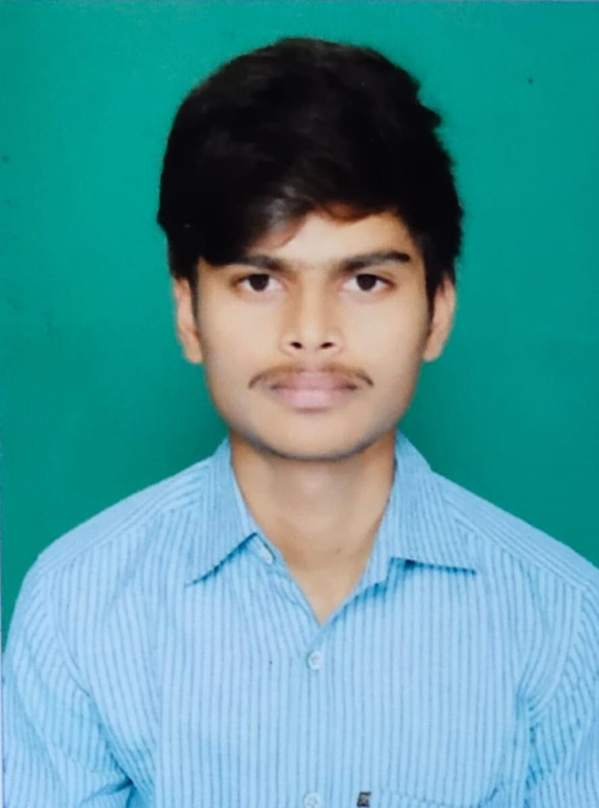

|

|
An aspiring Software Engineer keen to apply my knowledge on Python and JAVA into practical work.
|
EDUCATION
Bachelor of Engineering(B.E)
Sri Venkateshwara College of Engineering
08/2019-15/2023 7.59CGPA
courses
- information Science and
Engineering(ISE)
Pre-University Course(PUC)
Sri Chaitanya college
05/2017 - 05/2019 9.5 CGPA
courses
High School(SSC)
Sri Vani English Medium High School
06/2016 - 04/2017 9.8CGPA
courses
WORK EXPERIENCE
CVAT Intern
ManSys InfoTech India Private Limited
02/2023 - 03/2023 Bengaluru
Achievements/Tasks
- Responsible for developing supervised machine learning
tasks for object detection, image classification, image
segmentation, and 3D data annotation.
- Worked on installation and Basic implementation of CVAT.
Student Intern
Crytonix consulting services pvt. Ltd.
02/2023 - 03/2023 Bengaluru
Achievements/Tasks
-
Learnt about Azure Cognitive Services and Its
Implementation.
- Worked on Face Detection and Speech Recognition Projects
on Azure Cognitive Services.
- Built an Industry level Chat Bot using Azure Bot Service.
SKILLS
- JAVA
- Python
- SQL
- Git&GitHub
- HTML
- Computer Networking
- OOPS
PERSONAL PROJECTS
"Campus Community Connect" (11/2022 - 12/2022)
- Our system simplifies user login with Google, LinkedIn, or Facebook
credentials, facilitating student communication and knowledge
sharing. Features include a global discussion section, student clubs,
upcoming events, study groups, and easy access to library and
study resources.
“Machine Learning Based Analysis of Cryptocurrency
Financial Risk Management” (02/2023 - 04/2023)
- Machine learning, including LSTM, Time-Series Forecasting, and
ARIMA , is used to manage financial risk in the volatile crypto
currency market. It improves accuracy and efficiency in risk
management, although challenges with data quality and model
interpretability exist.
CERTIFICATES
- Accenture Developer Program Certification
(07/2021 - 08/2021)
- Project Development Using JAVA for Beginners (08/2021 - 09/21)
LANGUAGES
- ENGLIH
- Full Professional Proficiency
- HINDI
- Native or Bilingual Proficiency
- TELUGU
- Full Professional Proficiency